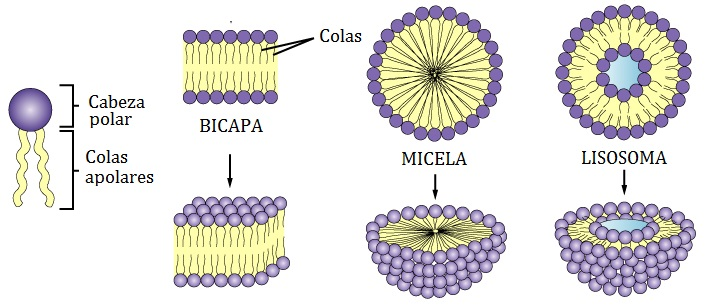

¿Qué es un Fosfolípido?
Imagina una molécula con una cabeza que ama el agua (hidrofílica) y dos colas que odian el agua (hidrofóbicas). Así son los fosfolípidos, los componentes principales de las membranas celulares. La cabeza está formada por un grupo fosfato (cargado negativamente) y las colas son cadenas de ácidos grasos.
Lo interesante de estos fosfolípidos es que tienen una doble personalidad:
- Una cabeza hidrofílica - polar: Está formada por un grupo fosfato que es afín al agua.
- Dos colas hidrofóbicas - no polar: Son cadenas de ácidos grasos que repelen el agua.
Gracias a estas características, los fosfolípidos se organizan en una bicapa en las membranas celulares, permitiendo separar el interior de la célula del medio externo mientras regulan el paso de sustancias.
Micelas de Fosfolípidos: Los Pequeños Superhéroes de la Biología
¿Cómo se forman las micelas?
Cuando pones fosfolípidos en agua, ocurre algo fascinante: ¡se organizan solos! Este proceso de auto-organización sucede porque las moléculas buscan su "lugar feliz".
- Las colas hidrofóbicas quieren escapar del agua a toda costa
- Las cabezas hidrofílicas quieren estar en contacto con el agua
El resultado: los fosfolípidos se agrupan formando pequeñas esferas llamadas micelas, donde:
- Las cabezas forman la superficie exterior en contacto con el agua
- Las colas se esconden en el interior, lejos del agua
Es como un grupo de personas en la lluvia con paraguas, donde los paraguas (las cabezas) están hacia afuera protegiendo a las personas (las colas) que están todas juntas en el centro, resguardadas del agua.
Micelas vs. Bicapas Lipídicas
Los fosfolípidos pueden formar dos estructuras principales:
Micelas: Estructuras esféricas pequeñas con las colas hacia dentro y las cabezas hacia fuera.
Bicapas lipídicas: Dos capas de fosfolípidos enfrentados, con las colas hidrofóbicas mirándose entre sí y las cabezas hidrofílicas mirando hacia el agua a ambos lados. Las membranas celulares están formadas por bicapas lipídicas. Esta estructura simple se llama liposoma. Los liposomas modificados, van a dar la estructura de las membranas celulares.
